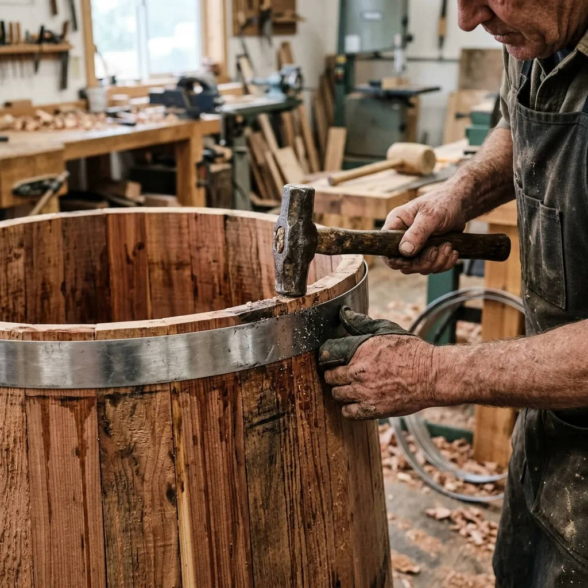

Cedar & Salt
Cedar & Salt

Coopered Cedar Tubs & Wood-Fired Sauna Specs
Detailed dimensions, heating parameters, and real-time workshop inventory for our authentic hydro-cooperage.
Catalog Index: Coopered Soaking Tubs & Saunas
Our workshop produces four signature models designed to accommodate varying group sizes and installation environments. Each tub is built entirely from premium clear vertical-grain western red cedar, ensuring structural perfection and natural decay resistance.
| Model Name | Diameter × Height | Water Vol (Litres) | Heating Options | Price (CAD) | Requisition |
|---|---|---|---|---|---|
| The Kootenay (2-Person) | 4-Foot × 3-Foot | 1,100 L | Wood Stove / Electric | $4,800 | Select |
| The Monashee (4-Person) | 5-Foot × 4-Foot | 2,200 L | Wood Stove / Electric / Hybrid | $6,200 | Select |
| The Selkirk (6-Person) | 6-Foot × 4-Foot | 3,400 L | Wood Stove / Hybrid | $7,800 | Select |
| The Revelstoke Outdoor Sauna | 7-Foot × 6-Foot (Barrel) | N/A | Wood Stove (Dry Heat) | $9,500 | Select |
To complement the soaking experience, every tub comes standard with hand-planed internal cedar benches designed for optimal buoyancy and posture. For deeper soaking depths, we provide sturdy external step-ladders crafted from matching heartwood, ensuring safe entry and exit without compromising the structural hoops.
Thermal efficiency is heavily reliant on heat retention during downtime. We offer thick, insulated red cedar covers designed to cap the tub tightly when not in use. These robust lids seal in the steam and phytoncide aromatics, preventing heat loss to the freezing air and drastically reducing the energy or firewood required to bring the tub back up to a soothing 40°C.
316-Grade Stainless Steel Hoop Architecture
The integrity of a coopered tub lies entirely in the mechanical tension of its hoops. We utilize heavy-gauge, 25-millimetre wide bands of 316-grade stainless steel, specifically chosen for its supreme resistance to corrosion and stretching over time.
During assembly in our Revelstoke workshop, these rigid steel bands are rolled precisely to the tub's tapered diameter and driven downward over the staves. The ends of the hoops are joined by heavy-duty cinch bolts. By tightening these bolts, we apply immense, evenly distributed inward pressure that forces the tongue-and-groove joints tightly together, forming a mechanically sound, watertight vessel without a single drop of chemical adhesive.
When you take delivery of a new tub, the cedar will be bone dry. During the first fill, the wood will eagerly absorb the water and expand dramatically, pushing back against the unyielding stainless steel hoops. This massive outward pressure is what creates the final, permanent seal. You may observe slight weeping for the first forty-eight hours; this is the natural curing process. Once the timber is fully saturated, the weeping ceases entirely, resulting in an impenetrable wooden vault.
Heating & Cooling Systems: Wood-Fired & Chiller Ready
Whether you seek the primal ritual of a wood fire or the clinical precision of electric chilling, our tubs are engineered to accommodate top-tier thermal systems.
Submerged Marine Aluminum Wood Stove
Our flagship heating method. Dropped directly into the tub behind a protective cedar fence, this stove maximizes heat transfer, capable of warming 2,200 litres rapidly with nothing but dry cordwood.
External Gas Heater Port
For installations requiring rapid heating on demand, we mill custom inlet and outlet ports designed to integrate seamlessly with external propane or natural gas circulation heaters.
Cold-Plunge Chiller Inlets (3°C)
Transform your cedar tub into a professional thermal contrast plunge. These specialized insulated ports connect directly to commercial chilling units, maintaining ice-cold temperatures effortlessly.
The submerged marine aluminum wood stove is a marvel of off-grid thermodynamics. Because the firebox is completely surrounded by water, nearly one hundred percent of the thermal energy is captured and transferred to the soak. When fueled with well-seasoned dry larch or birch, this stove will raise the water temperature of a 5-foot Monashee tub from near-freezing to a perfect 40°C in approximately two hours, all accompanied by the comforting crackle of burning wood.
Draft control is managed entirely through an adjustable air intake on the stove lid, allowing you to fine-tune the combustion rate. Once your desired temperature is reached, you simply close the draft to bank the coals, providing a steady, gentle heat that keeps the tub perfectly warm for hours while you soak beneath the alpine stars.
Botanical Hydrotherapy Bath Salts
Cataloging our organic bath salts, formulated explicitly to harmonize with the raw cedar interior of our coopered tubs without degrading the wood grain.

Kootenay Pine & Fir Salt
Our signature blend. Coarse Pacific sea salt mixed with wild-harvested sub-alpine fir needles and cedar oils. Designed to maximize respiratory clearing and deep forest immersion.
Pacific Kelp & Mineral Detox
A heavy concentration of organic Epsom minerals intertwined with dried Pacific kelp fronds, formulated for aggressive lactic acid extraction following intense endurance efforts.
Glacial Mint Recovery Soak
Infused with wild peppermint essential oils and crushed birch charcoal, this blend is optimized for cold-plunge recovery routines, sharpening neurological focus and triggering immediate vasoconstriction.
All of our botanical bath salts are packaged in 2-kilogram re-sealable heavy cloth sacks. Because we use whole, raw botanical ingredients like pine needles and kelp, we design our sacks to be steeped directly into the hot tub water, much like a giant tea bag. This prevents organic debris from settling on the cedar floor, ensuring clean water lines and effortless tub maintenance while delivering maximum therapeutic potency.
Current Workshop Stock & Ready-to-Ship Tubs
For those requiring immediate dispatch, we occasionally maintain a small reserve of pre-assembled tubs in our Revelstoke workshop. These units have already passed structural air-testing and are ready for crating.
| Inventory Item | Available Units | Status | Action |
|---|---|---|---|
| 4-Foot Cedar Tubs (The Kootenay) | 3 units | Ready to Ship | Reserve Tub |
| 6-Foot Cedar Tubs (The Selkirk) | 2 units | Ready to Ship | Reserve Tub |
| Submerged Wood Stoves | 5 units | Ready to Ship | Reserve Tub |